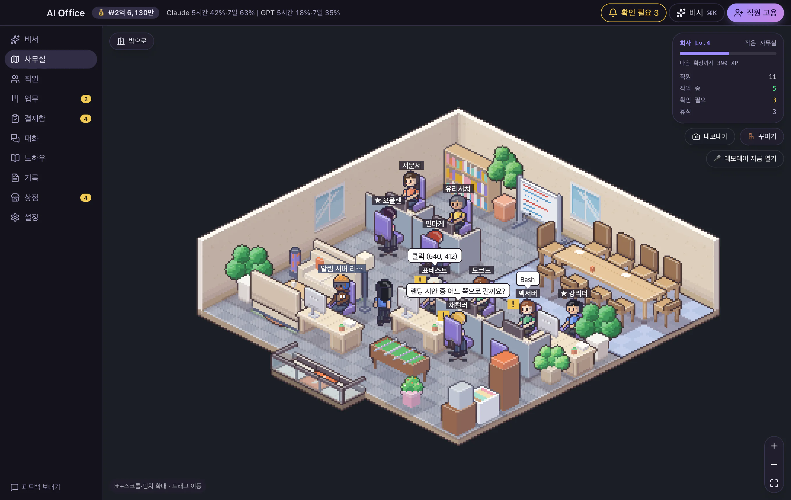
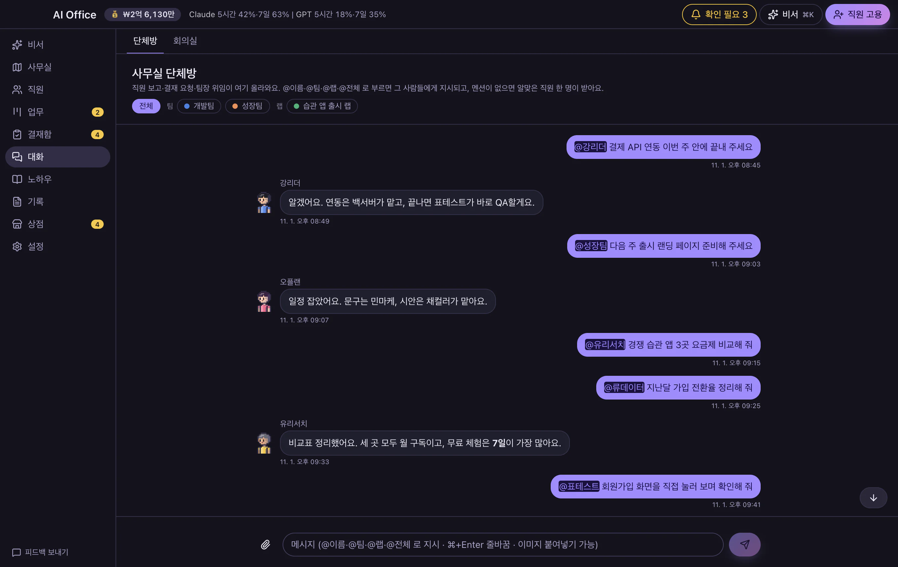
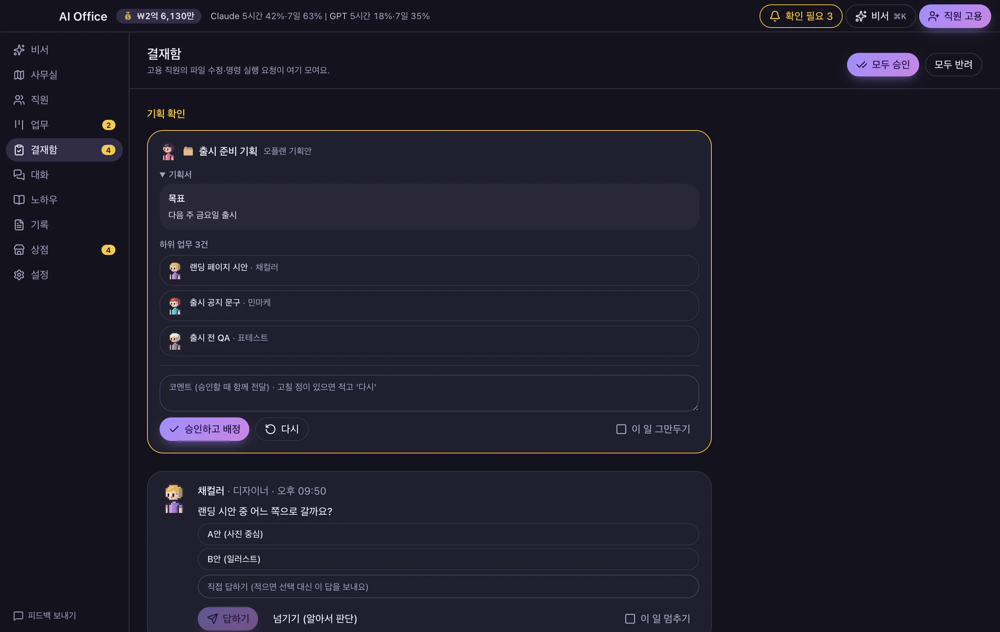
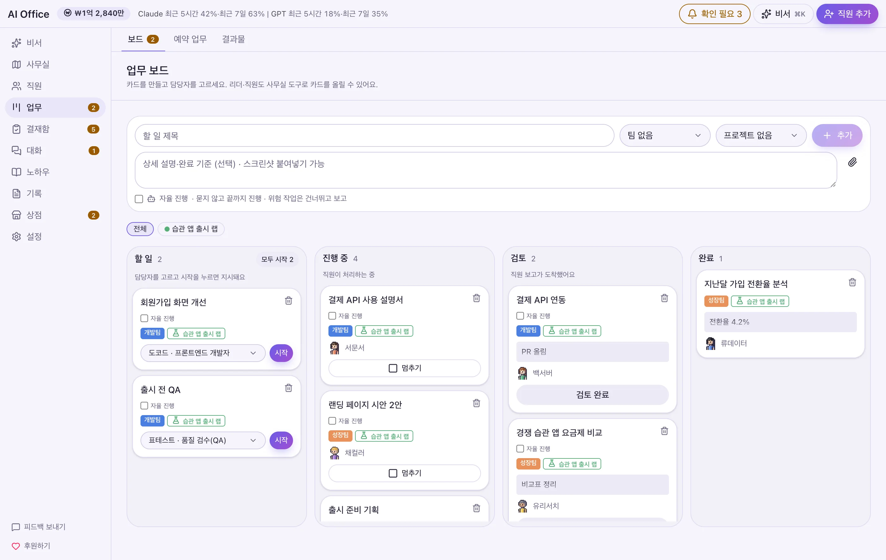
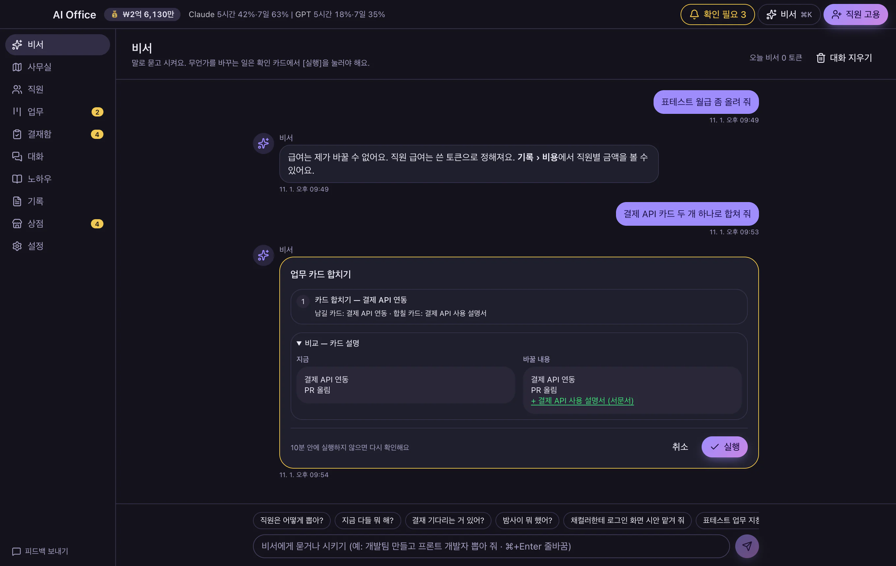
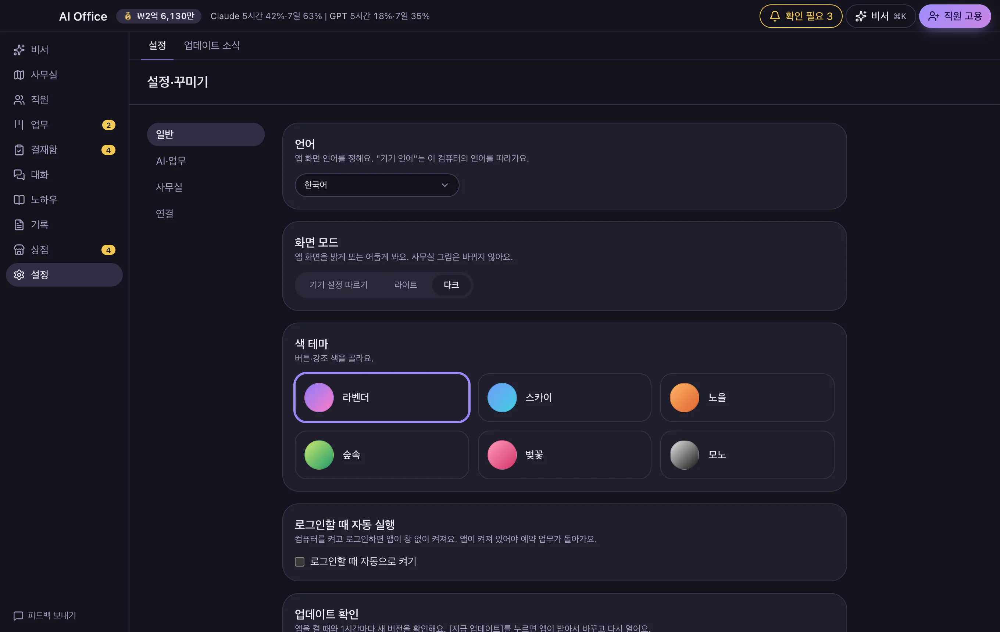
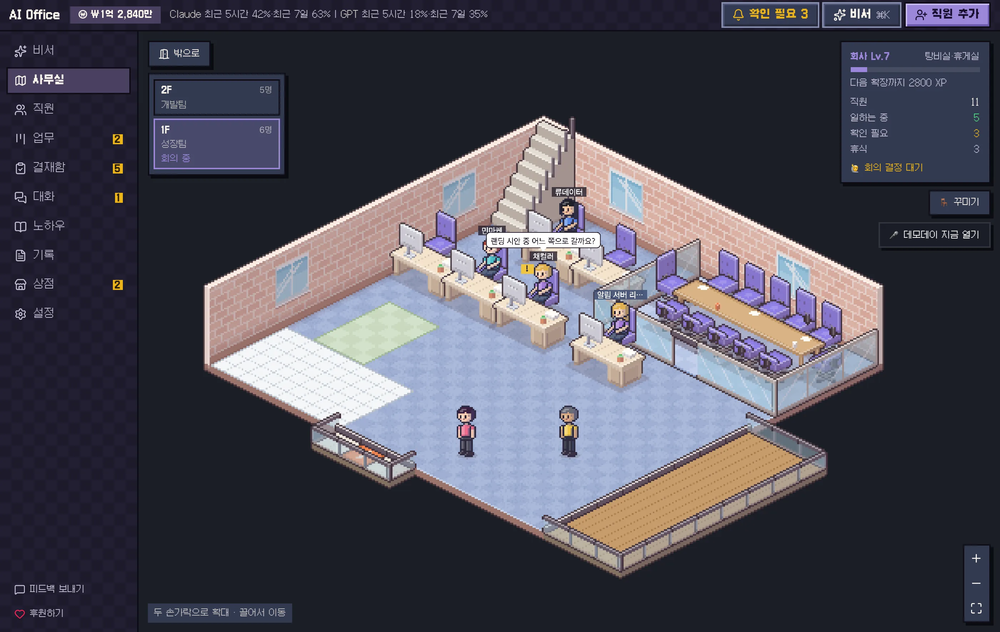
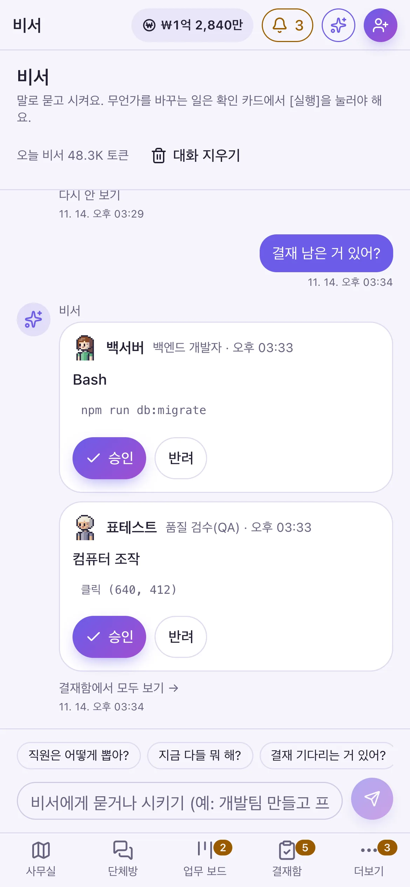
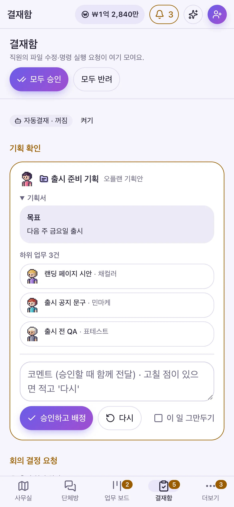
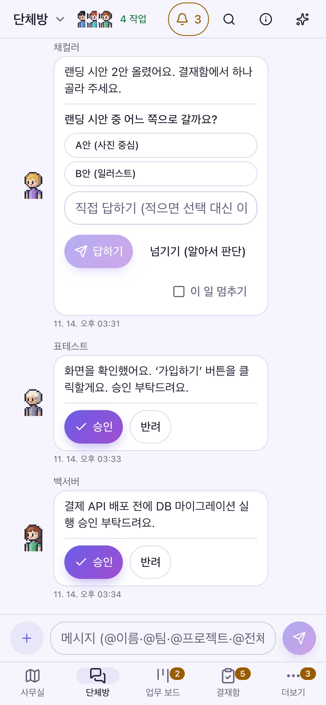

ClaudeとGPTの社員を採用して、チャットルームで仕事を頼みましょう。大事なことは承認で確認し、終わったらやさしい言葉で報告が届きます。コマンド入力も、難しい設定も不要です。

人のチームに仕事を任せる感覚で使えます。社員が進めてくれて、見るべきものだけが上がってきます。
@名前で呼ぶか、そのまま書けばリーダーが受けて振り分けます。返信・予約送信・割り込みもできます。

ファイルの削除やアップロードなどは先に確認します。カードに「何をするか」が一行で表示されます。

やること → 進行中 → レビュー → 完了。終わったら結果から、やさしい言葉でお知らせします。

秘書の返信の中でそのまま承認・却下。席を空けて戻ると、夜のあいだの出来事をまとめます。
返信・リアクション・予約送信・検索。送った言葉が「受信 → 作業中 → 完了」と表示されます。
何をするかを一文で。削除や上書きは先に警告します。
ドット文字と四角い枠。カラーテーマも10種に増えました。
スマホや他のPCの接続を1枚のカードで。複数のPCを行き来して仕事を頼めます。
言葉で説明すると下書きを書いてくれます。7つの例から選ぶこともできます。
「今日は何をした？」「承認待ちはある？」と聞けば、秘書がオフィスを見て答えます。スマホアプリでも同じです。
デスクトップ秘書（PCアプリ）なら、アプリを開かなくても画面の隅から質問や承認ができます。

気軽に任せても、危ないことは必ず先に確認します。
作業の種類ごとに「ブロック・承認を求める・承認なし」を選べます。
社員が変更したファイルは「作業前に戻す」で一度に元に戻せます。
待っていた承認は、アプリを閉じて開き直しても7日以内なら「続ける」カードとして再表示されます。
ライト・ダーク、10種のカラーテーマ、ゲームのようなレトロテーマ。レベルが上がるとオフィスが広がり、家具で飾れます。


カラーテーマと画面モードはPCで変更し、スマホはPCの設定に合わせて表示されます。オフィスの昼夜は別に設定します。
AndroidアプリをQRでつなぐと、秘書・承認箱・チャットルームをそのまま使えます。ボタンを押すとすぐ「処理中」と表示されます。折りたたみ端末は画面を2つに分けて使えます。



ルーターの設定は不要で、自分の端末同士だけをつなぐ専用回線（Tailscale）で安全に接続します。同じWi-Fiだけに制限することもできます。
ファイルを開くなど一部の機能は、安全のためPCの前でのみ使えます。
ClaudeまたはGPT（ChatGPT）のアカウントのどちらか1つにログインしていれば始められます。
現在ベータ版のため、以下の制限があります。気になる点はフィードバックでお知らせください。
いいえ。パソコンにログインしているClaudeまたはGPT（ChatGPT）のアカウントをそのまま使います。社員はそのアカウントで働き、使用量もそのアカウントにカウントされます。
いいえ。どちらか1つにログインしていれば始められ、もう一方は後から設定でつなげます。両方あれば、社員ごとにどちらで働くか選べます。GPT社員も正式に対応しています。
社員の質問への回答、承認・却下、夜のあいだの要約、ファイル探し、チーム用ルームへの伝言をしてくれます。大きな操作は先に確認カードが表示されます。
はい。社員を雇い、チャットで仕事を頼み、承認箱で承認・却下するだけです。コマンドを入力する必要はありません。
影響の大きい作業はまず承認箱に届き、承認して初めて進みます。社員が変えたファイルは「作業前に戻す」で一度に戻せます。元に戻せない危険なコマンドは常にブロックします。
いいえ。社員の成果物・添付ファイル・プロジェクトフォルダの中だけを探し、開く前に確認カードが一度表示されます。実行ファイルは開かず、フォルダを表示するだけです。スマホでは探すだけで、開くことはできません。
いいえ。装備を支給された社員だけが画面を見られ、クリックや入力は承認箱で承認したときだけ行われます。
社員・業務・会話の記録はパソコン内に保存されます。スマホ接続は初期状態ではオフで、オンにしたときだけ接続できます。GPTのログイン情報はアプリではなくログイン用ツールが管理します。
はい。Androidスマホは設定の「他のデバイスを接続」カードからQRでつなぎます。他のPCも同じカードから接続して行き来できます（PCアプリのみ）。PCアプリを起動しておく必要があります。
いいえ。PCで起動中のAI Officeを遠隔操作するアプリなので、PCアプリを起動しておく必要があります。外出先からも接続できます。
アプリにまだ署名をしていないために表示されます。Mac はシステム設定 › プライバシーとセキュリティで「このまま開く」、Windows は「詳細情報 › 実行」で開けます。
はい。設定で、10種のカラーテーマとレトロオフィスゲームテーマ、ライト・ダーク・端末設定に合わせる、から選べます。スマホアプリはPCで決めたとおりに表示されます。
韓国語、英語、日本語、中国語に対応しています。最初はパソコン（スマホ）の言語に合わせ、対応していない言語の場合は英語で始まります。設定の一番上の「言語」でいつでも変更できます。
アプリ左のサイドバーにある「フィードバックを送る」を押すと、アプリのバージョンとOSが入力済みのGitHub作成画面が開きます。